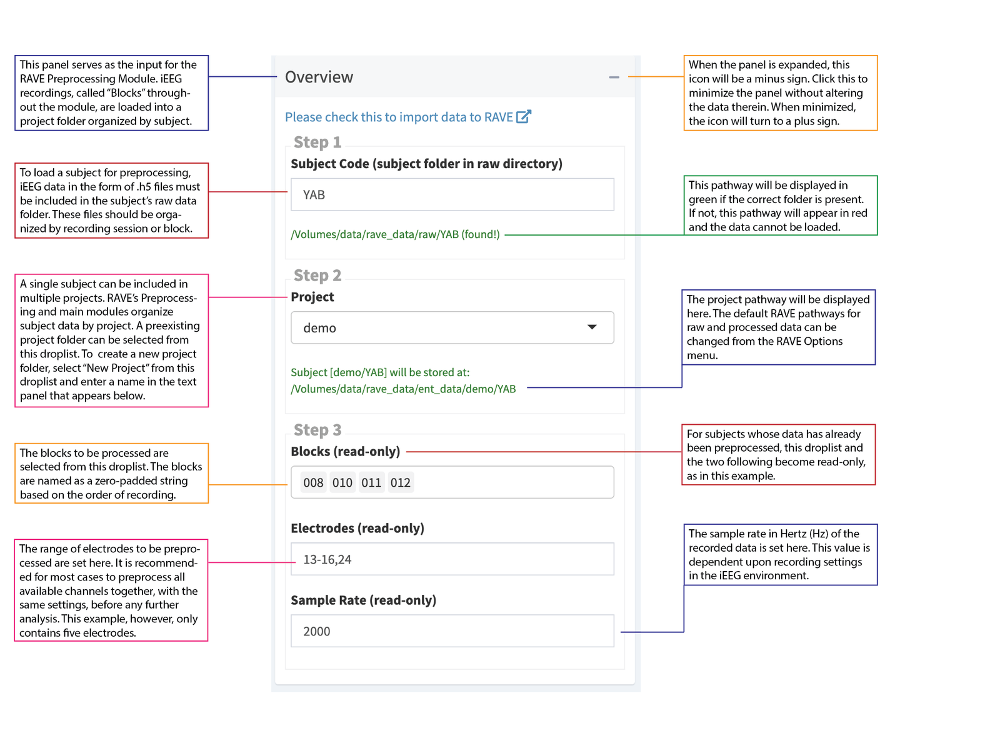

4.3 Importing demo data
Launch the RAVE preprocessing module by copy and paste the following command into the RStudio console:
The Preprocessing module will then open in a browser window, allowing you to see the Overview page. The Overview page is where you will import or load your data into RAVE. It consists of three panels. * Overview: this is where inputs and configurations will be specified * Information: a summary of the inputs and configurations is shown here. * Import Widgets
Proceed to the overview panel to specify these inputs and configurations.
4.3.1 Step 1: Select Subject
Enter the code for the demo subject whose iEEG data to import into RAVE. Note that a subject’s data should be stored in its own folder within the raw directory (raw_dir folder) within therave_data folder.
E.g. to select demo subject KC, enter “KC” and the following message should result, indicating the subject has been found: /Users/your_home_directory/rave_data/raw_dir/KC (found!)
4.3.2 Step 2: Select Project or Create New One
This step allows for the specification of where to storee the cleaned data. To create a new project, select “New Project” from the drop down menu and indicate the desired project name. Note that by default, this project folder will be created within the data directory (data_dir) within rave_data, with a new folder for the subject.
E.g. to store demo subject KC in a new project called “Test”, the following message should result: Subject [Test/KC] will be stored at: /Users/your_home_directory/rave_data/data_dir/Test/KC
Then, click “create subject” to proceed.
4.3.3 Step 3: Validate Data
In this step, specify your desired electrode (aka channel) options:
Folders: Each folder corresponds to a block, aka a period or session of continuous electrode recording. Select the blocks that correspond to the trials to analyze. (E.g. for KC, you could select blocks 003 and 004.)
Electrodes: Indicate the electrodes to analyze. Note that it is recommended that you run the preprocessing steps on all electrodes at once. (E.g. for KC, you should indicate 1-92.)
Sample Rate: Indicate the sample rate of iEEG recording equipment; this value will determine the rate at which the preprocessing will be run. For demo subjects, indicate
2000.Physical Unit: Indicate the units to use to measure voltage. Demo data can be kept at the default
as-is (no change)option.File Format: RAVE currently supports six file formats for iEEG data. Demo data is stored using
.mat/.h5 files, in which one file represents one electrode in a given block. (For guidance when selecting a file format, RAVE will briefly describe the format and display a sample organization of the directory.)
Click the Check Subject button to proceed. (Note: this process can take a few minutes; progress will be displayed via pop-ups in the bottom right.)
Click the Start Import button to proceed. (Note: this process can take a few minutes.)
The demo subject has successfully been imported into RAVE. Proceed to the preprocessing modules for further cleaning of this data.
The following screenshot summarizes the data loading process: 